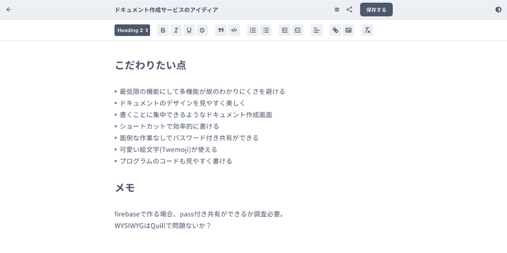
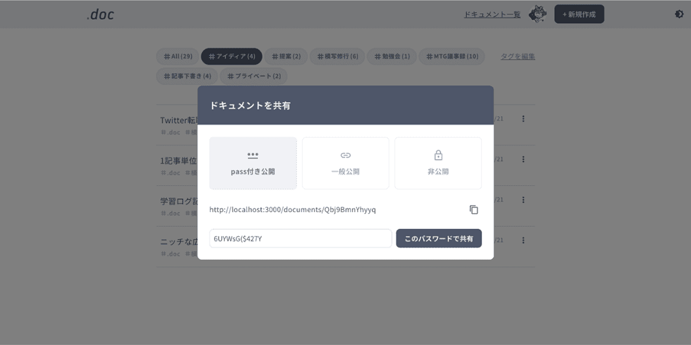
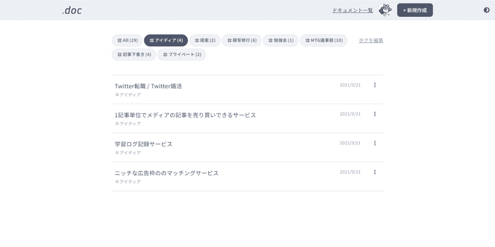

快適さへのこだわり
-

シンプルな機能
多機能でない分、わかりやすく・使いやすい機能。書くこと、共有することにのみ特化。
-
綺麗なドキュメント
見やすいドキュメント、見やすい管理画面。
シンプルでわかりやすいデザイン。 -
書きやすいエディタ
ドキュメント作成画面の装飾はショートカットを用意。慣れればサクサク。
.docの機能
-
 ドキュメント作成
装飾はボタンをワンクリック、もしくはショートカットキーで、綺麗に作成可能。
-
 webページとして共有可能
パスワード付き共有 / 一般公開(URLを知っていれば閲覧可)/ 非公開の3つを用意。
-
 タグでドキュメントを管理
ドキュメントはタグ付けすることで、分類が可能。もちろん追加削除 / 複数指定も可能。